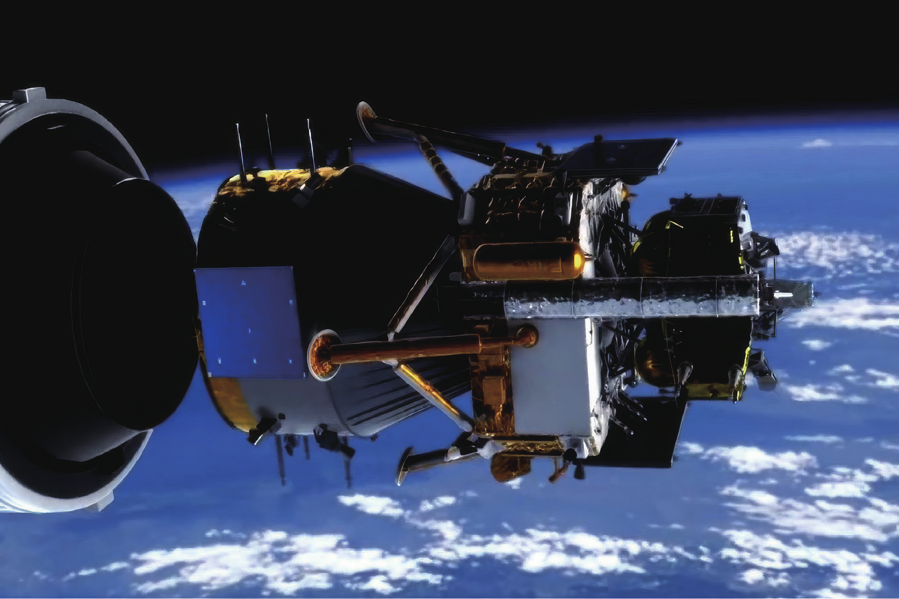
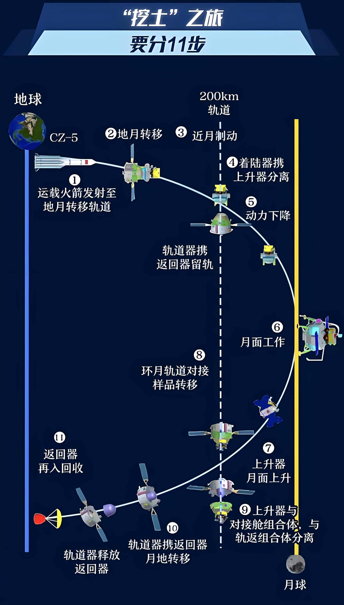
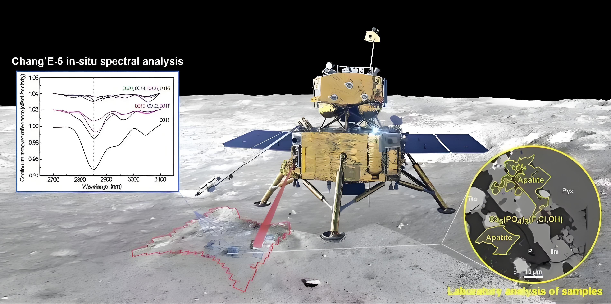

嫦娥五号探测器是中国探月工程“绕、落、回”规划中第三阶段的月球探测器，执行中国首次地外天体采样返回任务，计划采集约2000克月球样本返回地球。
嫦娥五号于2020年11月24日凌晨4时30分在海南省文昌航天发射场发射升空，完成月球表面自动采样任务后，携带1731克月球样品于12月17日凌晨1时59分在内蒙古四子王旗着陆场着陆。这是继月球24号之后时隔44年人类再次从月面带回月球样本。
中国探月工程第三阶段
嫦娥五号探测器是中国探月工程“绕、落、回”规划中第三阶段的月球探测器，执行中国首次地外天体采样返回任务，计划采集约2000克月球样本返回地球。
嫦娥五号于2020年11月24日凌晨4时30分在海南省文昌航天发射场发射升空，完成月球表面自动采样任务后，携带1731克月球样品于12月17日凌晨1时59分在内蒙古四子王旗着陆场着陆。这是继月球24号之后时隔44年人类再次从月面带回月球样本。

2020年11月24日（发射日）
2020年11月30日
2020年12月1日
2020年12月3日
2020年12月6日
2020年12月12日
2020年12月17日

